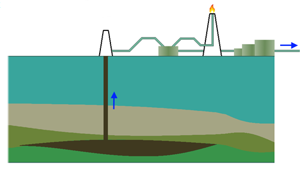
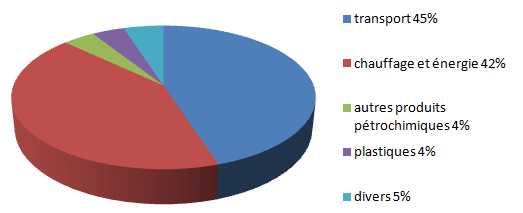
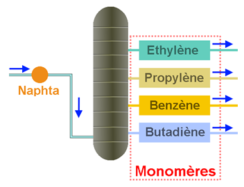
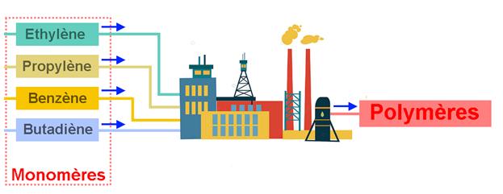
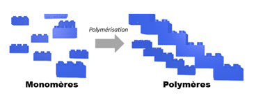
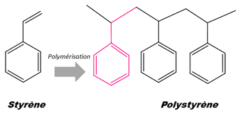
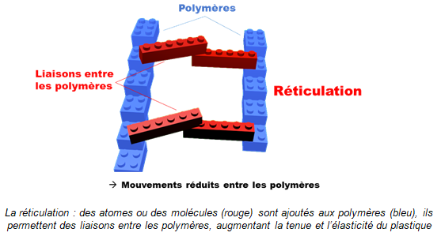

|
|
|
|
| Origine des
matières plastiques |
|
|
|
|
|
|
|
Aujourd’hui,
les
matières plastiques sont principalement des
polymères
synthétiques, obtenus par synthèse
à partir de substances
extraites du gaz naturel, mais surtout du pétrole. 55% de la
production du
plastique est issue du pétrole, 35% du charbon, et
10% des gaz
naturels.
Le
pétrole est une
huile 100% naturelle formée par un mélange
complexe de milliers de composés. Il
faut le transformer pour pouvoir l’utiliser. Ainsi, le
pétrole est traité dans
un complexe pétrochimique appelé raffinage pour
fabriquer des produits
chimiques de base : les
monomères |
| |
|
1. |
La
première étape: l'extraction du pétrole |
|
|
|
Le
pétrole
est le
résultat de la
décomposition d’organismes vivants en un
mélange d’hydrocarbures
donc
de
substances composées d’hydrogène et de
carbone.
Pour
les pétroles conventionnels, relativement fluides,
l'extraction s'effectue simplement, de manière naturelle ou
assistée.
|
 |
|
| |
|
2. |
La
deuxième étape: la distillation |
|
|
|
|
A la
raffinerie,
le pétrole est séparé
en plusieurs fractions par distillation. Les constituants du
pétrole ont des
points d’ébullition différents. Par
chauffage, on recueille successivement dans
la tour de fractionnement des gaz, des essences, des fiouls
légers et des
fiouls lourds. Le résidu est le bitume (ou asphalte)
utilisé comme revêtement
routier.
Toutes les
fractions se composent d’hydrocarbures qui ne
se distinguent que par la taille et la forme des molécules.
La fraction du
pétrole la plus importante pour la production des
matières plastiques est celle
des essences (naphta). Toutes
les fractions se composent
d’hydrocarbures, corps composés uniquement
d’atomes d’hydrogène (H) et de
carbone (C). La fraction du pétrole la plus importante pour
la production de
matière plastique est celle des essences, hydrocarbures
appelés naphta. Environ
18,7 t de pétrole brut donnent par distillation 3,74 t
d’essences. |
|
|
 |
|
|
|
Environ
4% de la consommation européenne du pétrole est
destinée à la
fabrication du plastique.N’ayant
aucune altération chimique, ces fractions doivent
être modifiées
chimiquement afin de devenir des produits plus utiles.
|
|
| |
|
3. |
La
troisième étape: le craquage |
|
|
|
Par
la suite, le
naphta est transformé par craquage en hydrocarbures gazeux.
C’est un procédé
thermique qui consiste à casser les grosses
molécules en de plus petites. Le
naphta est craqué en le mélangeant à
la vapeur et en le chauffant à 800° avant
d’être rapidement refroidi à
400°, ce qui entraine des modifications chimiques.
Les
nouveaux corps gazeux formés sont des composés
simples appelés
« produits
chimiques de base ».
Ce
sont principalement de :
-
l’éthylène,
- du
propylène,
- du
benzène,
- du
butadiène ;
Ils
sont de petites molécules contenant entre 2 et 7 atomes de
carbone.
Le
but de se craquage est de former les monomères.
|
 |
|
| |
|
4. |
La
quatrième étape: la polyaddition |
|
|
|
Les
polymères sont fabriqués à partir de
ces monomères. Ces derniers sont
aussi des produits de départ pour différentes
matières plastiques.
Le
matériau (polymère) se présente
à la sortie du réacteur sous forme de poudre
solide ou de résine liquide.
Pour
faciliter les transformations et la manutention, on
préfère souvent l’avoir
sous forme de particules de dimensions
géométriques bien définies. Dans ce
cas
le polymère subit une opération
complémentaire de plastification par extrusion
sous forme de jonc suivie d’une découpe donnant
les classiques granulés
(diamètre et longueur de 1 à 2 mm).
|
|
 |
|
|
|
5. |
Principe
de la polyaddition |
|
| |
|
Une
matière plastique est un ensemble de
polymères. Les polymères sont de grosses
molécules issues de l’assemblage de
nombreuses petites molécules appelées
monomères.
Généralement,
pour faire un polymère, il
faut un ou deux types de monomères qui sont
assemblés les uns aux autres.
Un
polymère est donc comme une maison composée de
centaines, voire de
milliers, de briques.
Ces briques élémentaires
sont appelées monomères,
d’où le
terme de polymères quand on en assemble un grand
nombre.
Ce
sont essentiellement les propriétés des
monomères et la taille des
polymères qui donneront les propriétés
finales du plastique. Mou, dur,
élastique etc.
Les
polymères peuvent tout-aussi bien être
d’origine synthétique (PVC,
polystyrène etc.) que naturelle (amidon, cellulose, latex
etc.).
|
 |
|
| |
|
5.1. |
Exemple
de polyaddition |
|
|
|
| Le
polystyrène qui vient de la polymérisation
(polyaddition) du monomère styrène. |
|
 |
|
|
|
|
|
|
Mais
comment ça marche et à quoi ça
sert ?
On
peut imaginer n’importe quel plastique comme un plat de
spaghettis où
chaque spaghetti est un polymère. Dans une assiette, chaque
spaghetti se colle
à celui d’à côté.
Pour qu’ils collent encore plus les uns aux autres, on peut
ajouter de la colle : c’est la
réticulation. Les spaghettis forment alors
un réseau tridimensionnel, plus dur, plus
élastique.
Concrètement
la réticulation est l’établissement de
ponts entre les chaines
de polymère. Pour cela, il faut faire réagir le
plastique avec d’autres
composés chimiques.
|
 |
Le
plus connu de ces
procédés de réticulation est celui de
la vulcanisation du caoutchouc qui
consiste à ajouter du soufre au caoutchouc. Le soufre va
permettre de faire des
liaisons entre les polymères et d’obtenir un
mélange qui a plus de tenue. Ce
procédé fut mis au point par
l’Américain Charles Goodyear
en 1839. Cette
opération est indispensable pour faire des pneus car
à l’état brut le
caoutchouc n’a pas suffisamment de tenue pour garder une
forme. C’est donc
grâce ce procédé que les pneus existent
et gardent leur forme.
|
|
|
|
|
|
|
|
|
|
 |